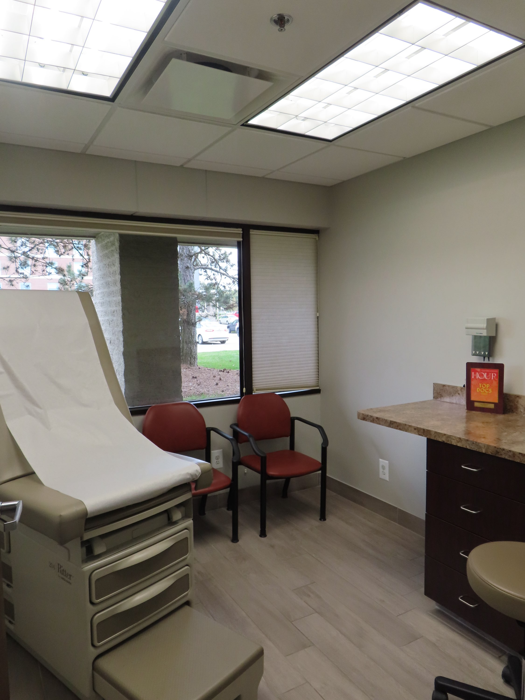

Sleep apnea is one of the most treatable sleep disorders — yet the treatment most people know about, CPAP therapy, isn't the right fit for everyone. Dr. Michel Alkhalil walks through the current spectrum of options, from the gold-standard mask to newer interventions that have changed the picture for patients who couldn't tolerate conventional therapy.
Obstructive sleep apnea occurs when the muscles that keep the upper airway open during sleep relax too much, allowing the airway to narrow or collapse. The result is repeated partial or complete breathing pauses throughout the night — sometimes hundreds of them — that fragment sleep and drop blood oxygen levels. Left untreated, OSA significantly increases the risk of hypertension, heart disease, stroke, type 2 diabetes, and motor vehicle accidents from daytime sleepiness.
CPAP: Highly Effective When Used Consistently
Continuous positive airway pressure (CPAP) therapy delivers a steady stream of pressurized air through a mask worn during sleep, pneumatically splinting the airway open. It's the most extensively studied treatment for OSA and, when used correctly and consistently, is highly effective at eliminating apneic events, normalizing oxygen saturation, and dramatically improving daytime alertness and cognitive function.
The challenge is adherence. Many patients find the mask uncomfortable, experience air leaks, develop claustrophobia, or simply give up before finding the right mask interface or pressure setting. A good sleep medicine practice doesn't just prescribe a machine and move on — it follows up, troubleshoots mask fit, adjusts pressure settings, and considers auto-titrating PAP (APAP) or bilevel PAP (BiPAP) variants for patients who don't tolerate standard CPAP. Dr. Alkhalil's team at AAIRS Clinic takes that follow-through seriously.
Oral Appliance Therapy
For patients with mild to moderate OSA who can't tolerate CPAP, or who prefer a less intrusive option, a custom-fitted mandibular advancement device (MAD) is a well-established alternative. These dental appliances hold the lower jaw slightly forward during sleep, which physically widens the upper airway and reduces the tendency to collapse.
Oral appliances are quieter, more portable, and more easily accepted by bed partners than CPAP machines. They're not as consistently effective as CPAP for severe OSA, but for the right candidate — typically someone with mild-to-moderate disease, without significant positional component — they can produce a clinically meaningful reduction in apnea-hypopnea index (AHI) and improvement in symptoms. The evaluation for oral appliance therapy involves close collaboration between the sleep physician and a dentist trained in dental sleep medicine.
Hypoglossal Nerve Stimulation
The most significant development in OSA treatment in the last decade has been the arrival of hypoglossal nerve stimulation (HGNS) therapy — an implantable device that uses electrical stimulation to activate the genioglossus muscle (the primary tongue muscle) in sync with each breath, preventing airway collapse without any mask or pressure.
HGNS is FDA-approved for patients with moderate to severe OSA who have failed or cannot tolerate PAP therapy, who have a specific anatomical airway collapse pattern (identified on a drug-induced sleep endoscopy), and who meet BMI criteria. It requires a surgical procedure to implant, but for appropriate candidates, outcomes are impressive — with studies showing significant reductions in AHI and marked improvements in quality of life. Dr. Michel Alkhalil evaluates patients for HGNS candidacy as part of the comprehensive OSA management available at the practice.
Positional Therapy and Behavioral Interventions
A meaningful proportion of OSA patients have position-dependent disease — their apnea is substantially worse in the supine (back-sleeping) position. For these patients, positional therapy devices that discourage supine sleeping can reduce AHI significantly, sometimes to the point where PAP therapy is no longer required. Weight loss, for overweight patients, also directly improves OSA severity — adipose tissue around the neck and tongue base contributes directly to airway narrowing. These approaches don't replace medical evaluation, but they're important components of a complete treatment plan.
Nasal congestion from allergic rhinitis or other allergy-related conditions also worsens OSA by increasing airway resistance. Treating the nasal obstruction — through medication, immunotherapy, or nasal surgery — can improve CPAP tolerance and in some cases improve OSA severity independently. This is one practical example of why Dr. Alkhalil's dual training in sleep medicine and allergy/immunology benefits his patients directly.
Conclusion
Sleep apnea treatment is no longer CPAP or nothing. The right treatment depends on OSA severity, anatomy, comorbidities, lifestyle, and patient preference — and a thorough evaluation at an AASM-accredited center like Troy Sleep Center is the starting point for identifying the best path forward. Read more about how sleep disorders are diagnosed or reach out to Dr. Alkhalil's team through the contact page to discuss your options.